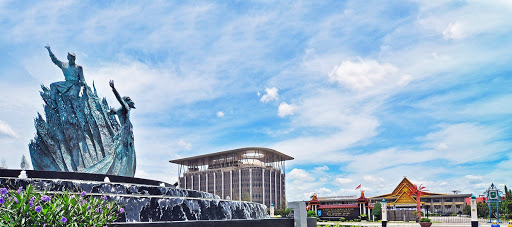
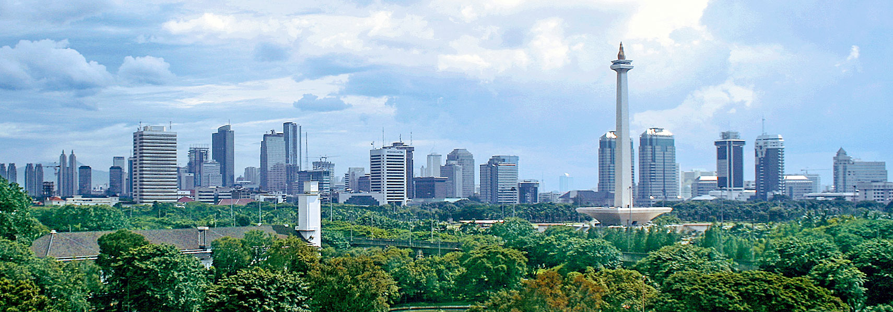

Artikel Sejarah
Sejarah kota Pekanbaru

Kota Pekanbaru adalah ibu kota dan kota terbesar di Provinsi Riau, Indonesia. Kota ini merupakan salah satu sentra ekonomi
terbesar di Pulau Sumatra, dan termasuk sebagai kota dengan tingkat pertumbuhan, migrasi dan urbanisasi yang tinggi.
Kota ini berawal dari sebuah pasar (pekan) yang didirikan di tepi Sungai Siak pada abad ke-18. Hari jadi kota ini
ditetapkan pada tanggal 23 Juni 1784. Kota Pekanbaru tumbuh pesat dengan berkembangnya industri terutama yang berkaitan
dengan minyak bumi, serta pelaksanaan otonomi daerah.
baca selengkapnya
Sejarah Kota Bandung

Kata Bandung berasal dari kata bendung atau bendungan karena terbendungnya sungai Citarum oleh lava Gunung
Tangkuban Parahu yang lalu membentuk telaga. Legenda yang diceritakan oleh orang-orang tua di Bandung mengatakan
bahwa nama Bandung diambil dari sebuah kendaraan air yang terdiri dari dua perahu yang diikat berdampingan yang
disebut perahu bandung yang digunakan oleh Bupati Bandung, R.A. Wiranatakusumah II, untuk melayari Ci Tarum dalam
mencari tempat kedudukan kabupaten yang baru untuk menggantikan ibu kota yang lama di Dayeuhkolot.
baca selengkapnya
Sejarah Kota Jakarta

Daerah Khusus Ibukota Jakarta (DKI Jakarta) adalah ibu kota negara dan kota terbesar di Indonesia. Jakarta merupakan
satu-satunya kota di Indonesia yang memiliki status setingkat provinsi. Jakarta terletak di pesisir bagian barat laut Pulau
Jawa. Dahulu pernah dikenal dengan beberapa nama di antaranya Sunda Kelapa, Jayakarta, dan Batavia.
Di dunia internasional Jakarta juga mempunyai julukan J-Town, atau lebih populer lagi The Big Durian karena dianggap
kota yang sebanding New York City di Indonesia.
baca selengkapnya